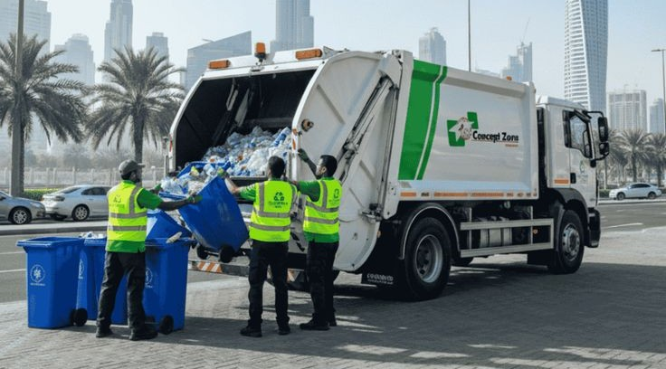
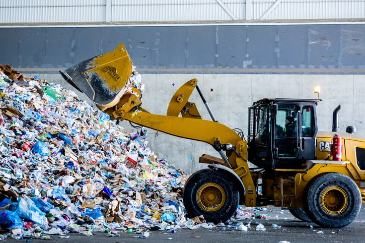
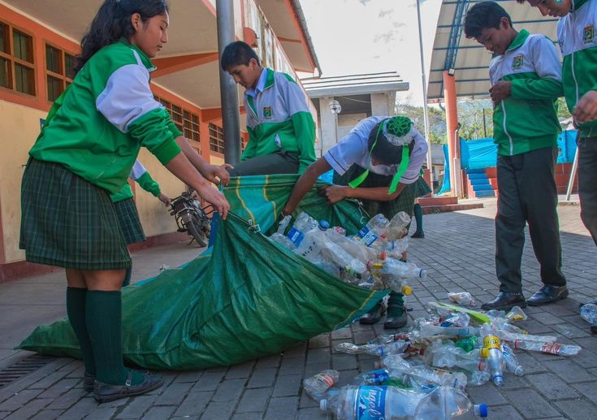
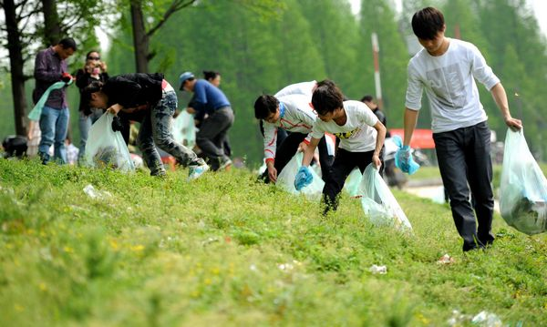
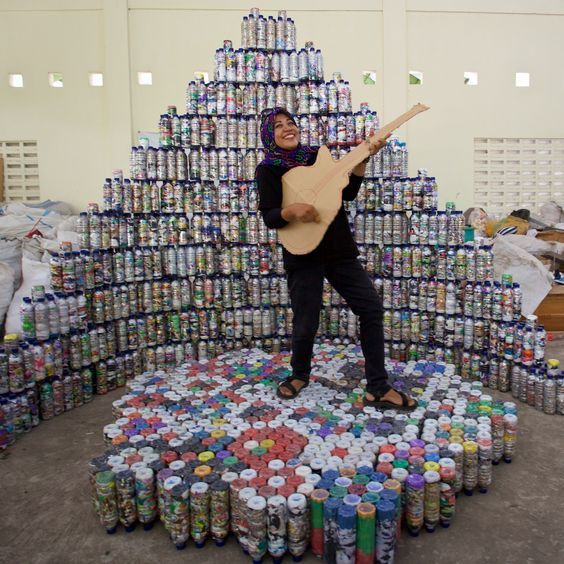
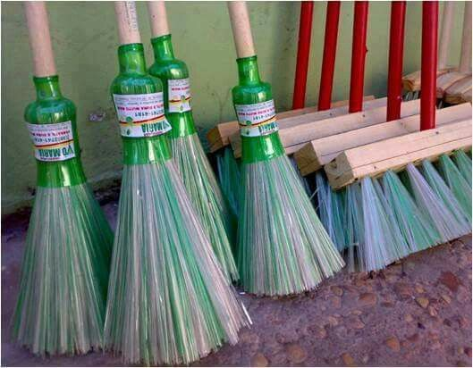
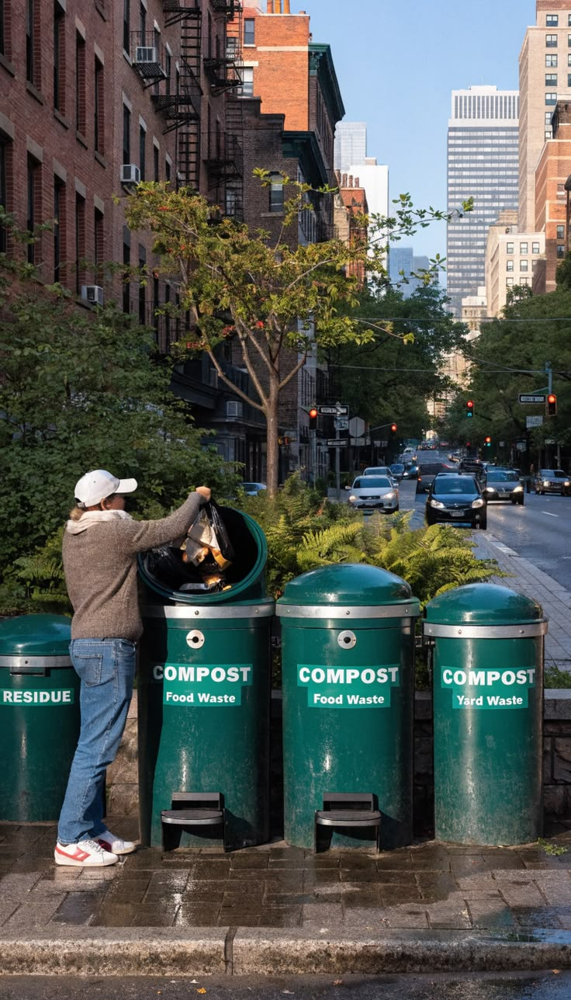

MITRA & FASILITAS
Jaringan Daur Ulang Indonesia
Temukan fasilitas pengelolaan sampah terdekat, baik swasta maupun pemerintah untuk mulai menyetorkan sampah Anda.

PemerintahBank Sampah Kasihan Bantul
Jl. Tambak, Ngestiharjo, Kec. Kasihan, Kabupaten Bantul, DIY

SwastaEco Station Duren Sawit
Jl. Curug Raya, Pd. Klp., Kec. Duren Sawit, Kota Jakarta Timur

PemerintahDepo Lingkungan IKN Sepaku
Pemaluan, Kec. Sepaku, Kabupaten Penajam Paser Utara, Kaltim
 Pemerintah
Pemerintah
Bank Sampah Belawan
Belawan Pulau Sicanang, Medan Belawan, Kota Medan, Sumatera Utara
 Swasta
Swasta
Mahendradatta Daur Ulang Bali
Jl. Mahendradatta No.A3, Padangsambian, Kec. Denpasar Bar., Bali

PemerintahDepo Kloofkamp Jayapura
Jl. Pemuda No.50, Gurabesi, Kec. Jayapura Utara, Kota Jayapura, Papua
Galeri Penyelamat Bumi




